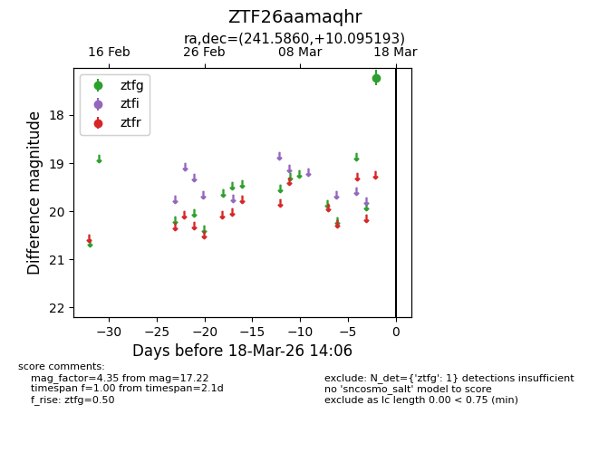
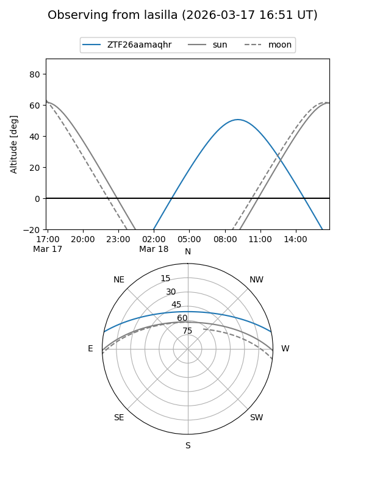
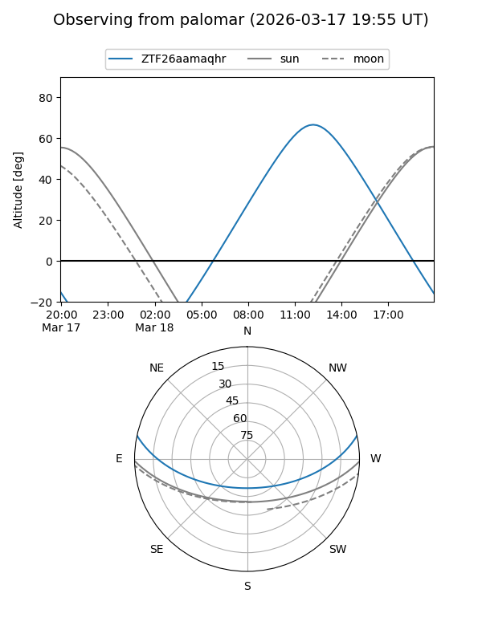

ZTF26aamaqhr
Target ZTF26aamaqhr at 2026-03-18 14:08
Aliases and brokers:
FINK: link
Lasair: link
ALeRCE: link
alt names
ZTF26aamaqhr (ztf,fink_ztf)
Coordinates:
equatorial (ra, dec) = 241.5860,+10.09519
equatorial (HMS+DMS) = 16:06:20.64,+10:05:42.69
galactic (l, b) = (22.2079,+41.14153)
Flags:
Photometry:
last ztfg=17.22
1 ztfg detections
Lightcurve

Visibility


Additional plots